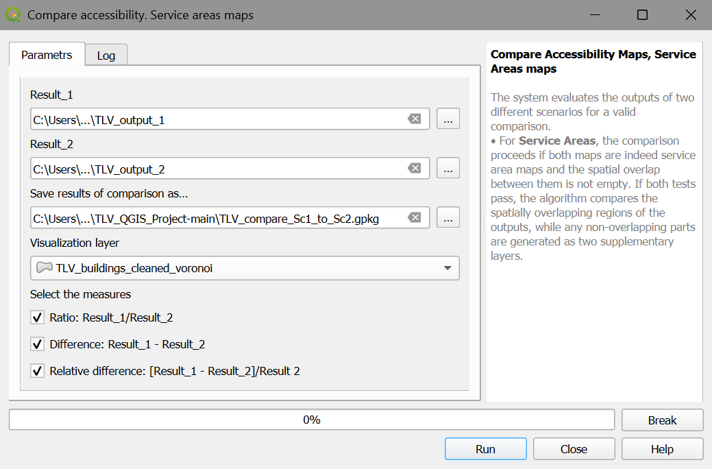
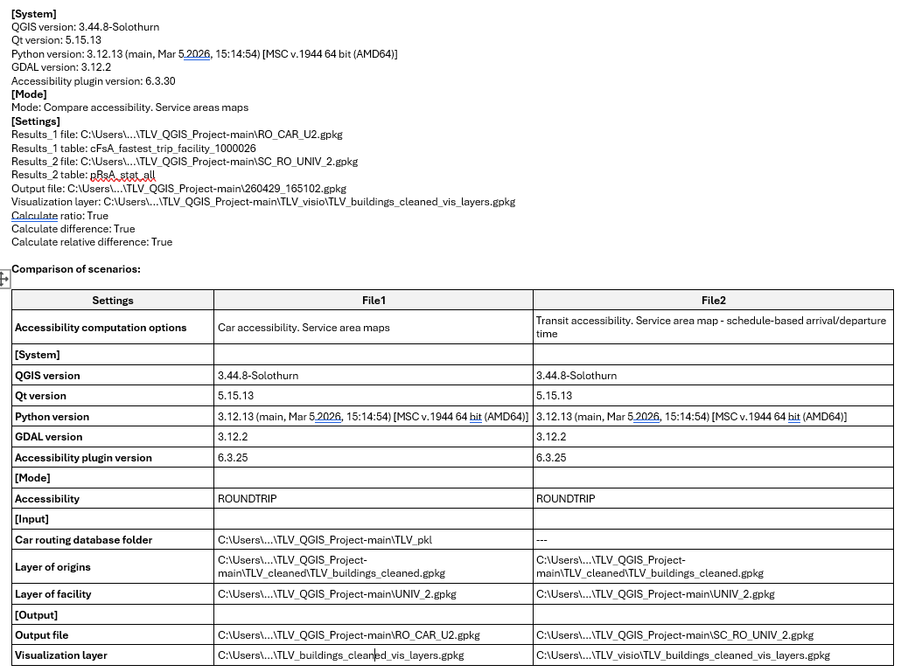
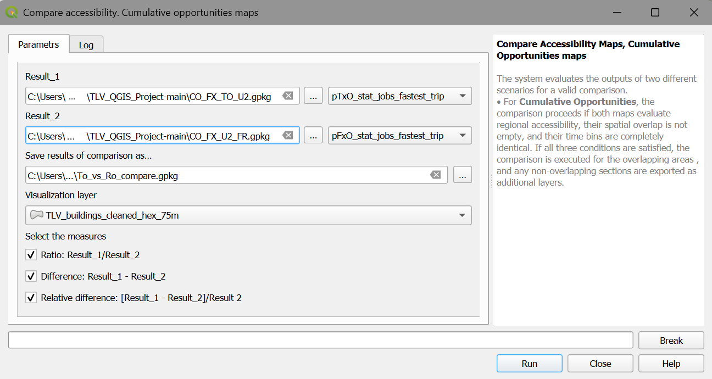

7. Compare accessibility maps
To fully understand accessibility dynamics, it is highly recommended to perform a comparative study where accessibility is evaluated across two or more scenarios featuring different travel modes or parameter sets. The Compare accessibility maps module within the Accessibility Calculator menu (Figure 1) is designed specifically for this purpose.
Figure 1. Compare accessibility maps menu
The comparison evaluates the outputs of two distinct scenarios. Upon initiation, the Accessibility Calculator first verifies that a valid comparison can be performed. This validation relies on the Log files generated during each scenario’s run, which are part of the output. The compatibility tests ensure that:
Both maps are of the identical type (i.e., either both are service areas, or both are cumulative opportunities maps).
The spatial overlap between the two output maps is not empty.
When comparing cumulative opportunities maps, both outputs utilize the exact same time bins.
Note
You can compare FROM-, TO-, and ROUNDTRIP-accessibility maps.
If all compatibility tests pass, the comparison is executed for the spatially overlapping sections of the outputs. The non-overlapping sections are generated as separate, additional layers alongside the main comparison results. The dialog for Compare accessibility maps → Service areas is shown in Figure 2

Figure 2. Copmare accessibility maps dialog for comparing two service area maps
Result_1: The result .gpkg file for Scenario 1.
Result_2: The result .gpkg file for Scenario 2.
Save results as: The .gpkg file that contains the results of the comparison.
Visualization layer: The visual layer (e.g., Voronoi or hexagon) for mapping the results of the comparison. Must be active in the current QGIS project.
Note
Unlike previous dialogs, the comparison procedure requires the used to explicitly select the visualization layer. While the visualization layer for each output is recorded in its respective log file, and the comparison procedure tests whether these layers have the same resolution and meaning, the AC-plugin cannot automatically detect the layer’s location during the comparison stage.
For more information on visualization layers, see here. The measures of comparison:
Ratio: (Result_1/Result_2): The ratio of the first scenario’s result to the second scenario’s result, calculated for the overlapping spatial extent.
Difference: (Result_1 - Result_2): The absolute difference between the first scenario’s result and the second scenario’s result, for the overlapping extent.
Relative difference: [(Result_1 - Result_2)/Result 2]: The proportional difference between the two scenarios, calculated for the overlapping extent. These results are expressed as percentages.
For each of these three measures, the plugin generates the primary map of the selected difference metric, alongside two supplementary maps:
A map highlighting buildings that are accessible in Scenario 1 (Result_1 is not NULL) but inaccessible in Scenario 2 (Result_2 is NULL).
A map highlights buildings that are accessible in Scenario 2 (Result_2 is not NULL) but inaccessible in Scenario 1 (Result_1 is NULL).
Click Run to initiate the comparison. The Progress bar tracks the computation status. You can interrupt the process at any time by clicking Break. The Log tab merges and displays the Log information from both scenarios, alongside metadata regarding the selected comparison measures and the overlapping extents. If the comparison fails, this Log file details the specific reasons for the failure (Figure 3).

Figure 3. The part of the log file of the Compare accessibility maps output
The dialog for the Compare accessibility maps → Cumulative opportunities is presented in Figure 4.

Figure 4. Copmare accessibility maps dialog for comparing two maps of cumulative number of opportunities.
Different from the case of service area maps comparison, the number of maps and the attributes exploited for constructing them can vary. The user should thus explicitly choose the layers from the .gpkg files of each of the outputs.